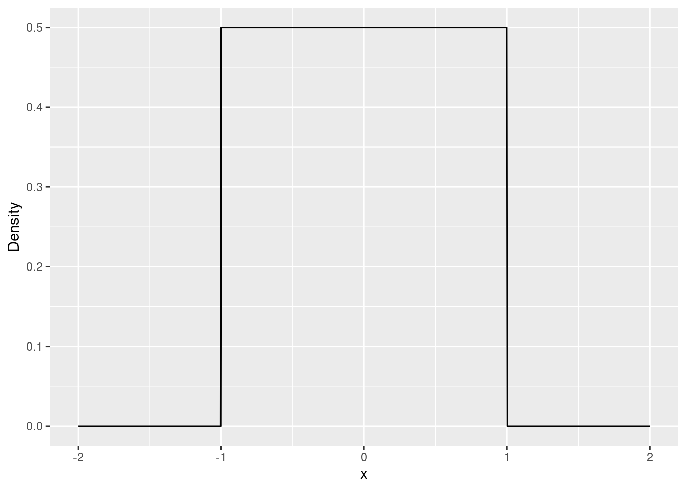
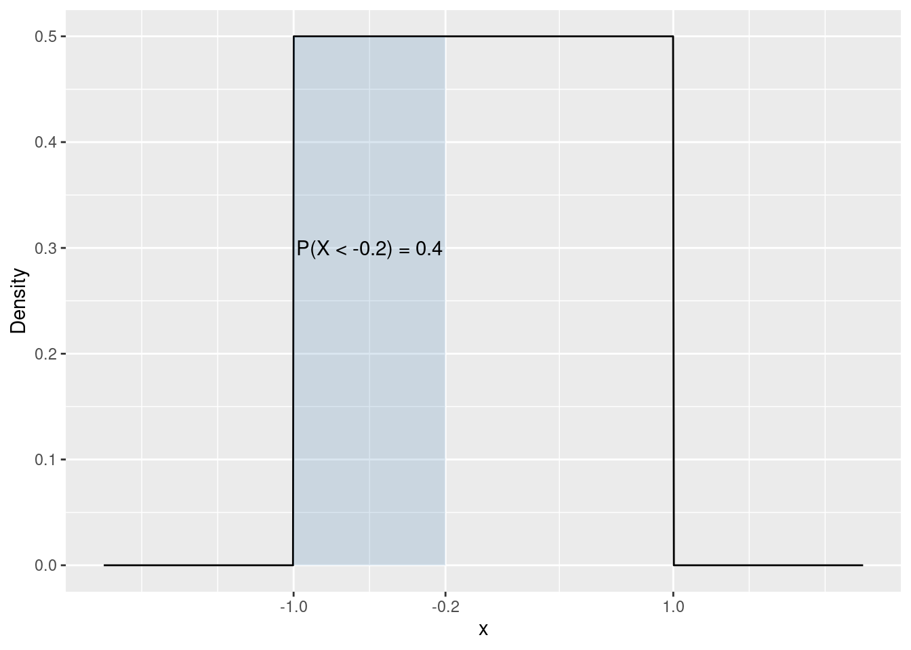
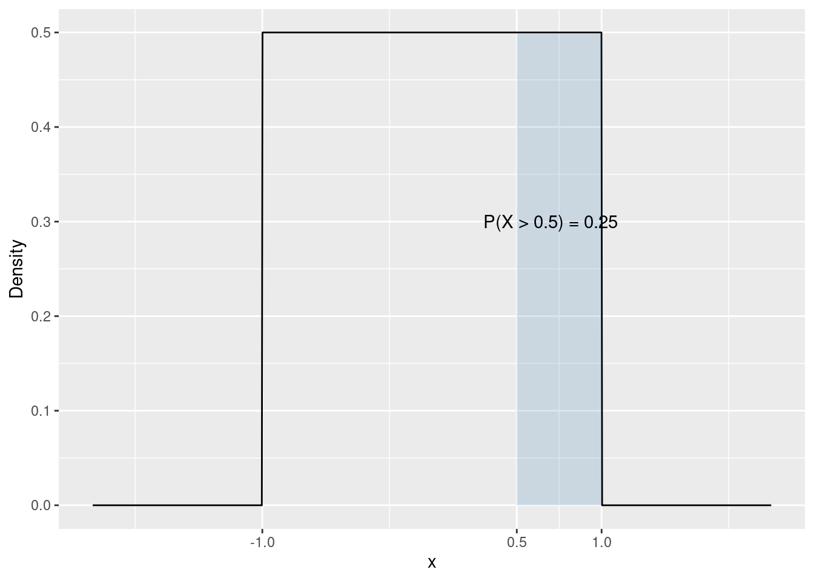
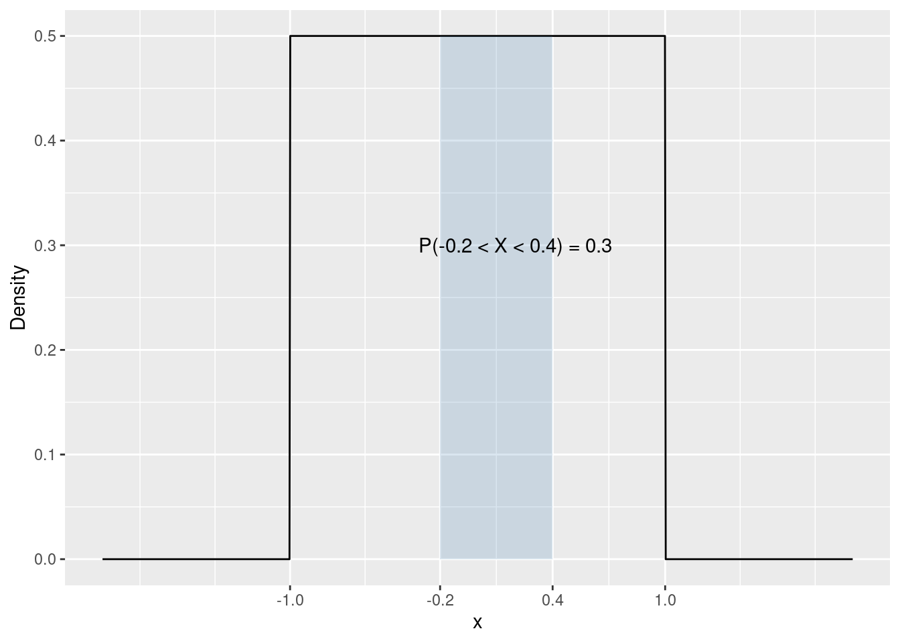
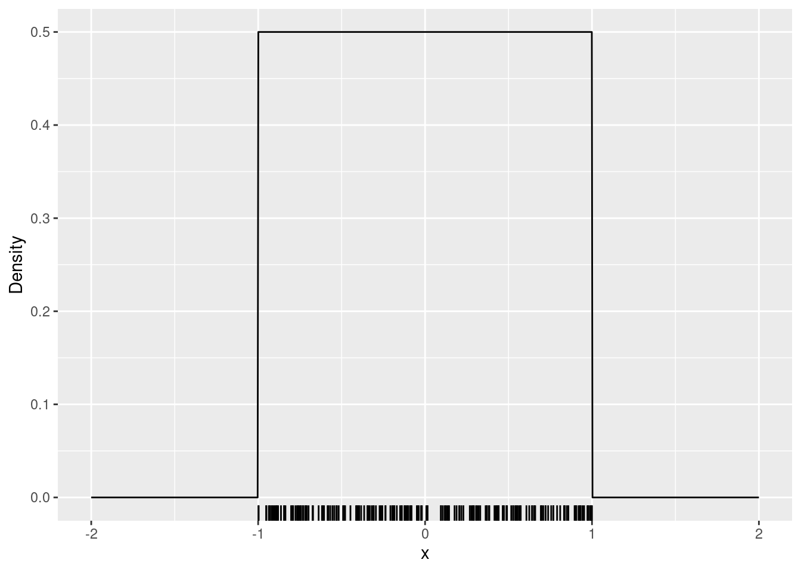
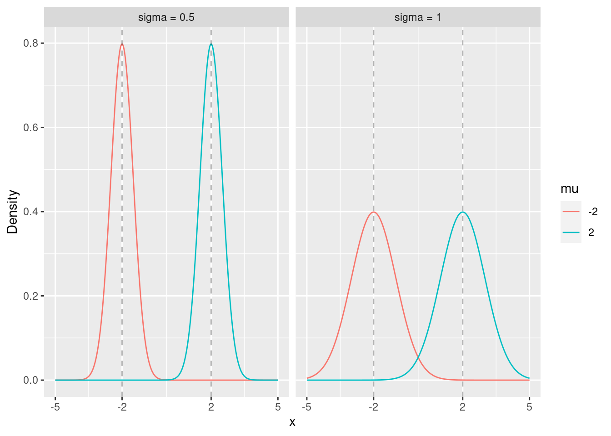
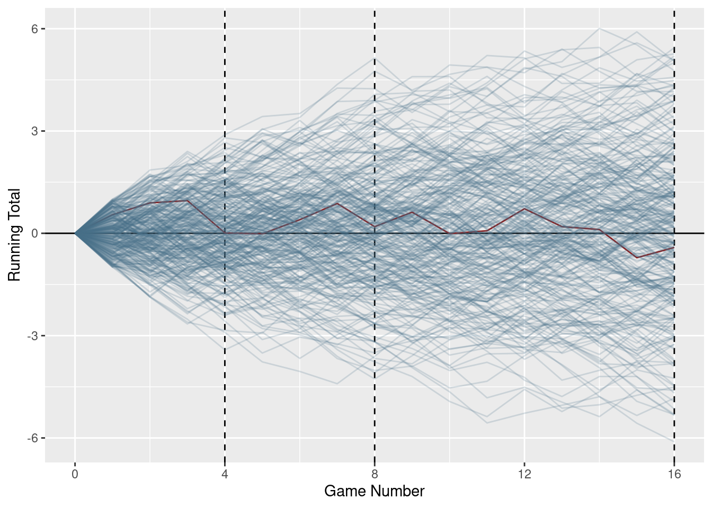
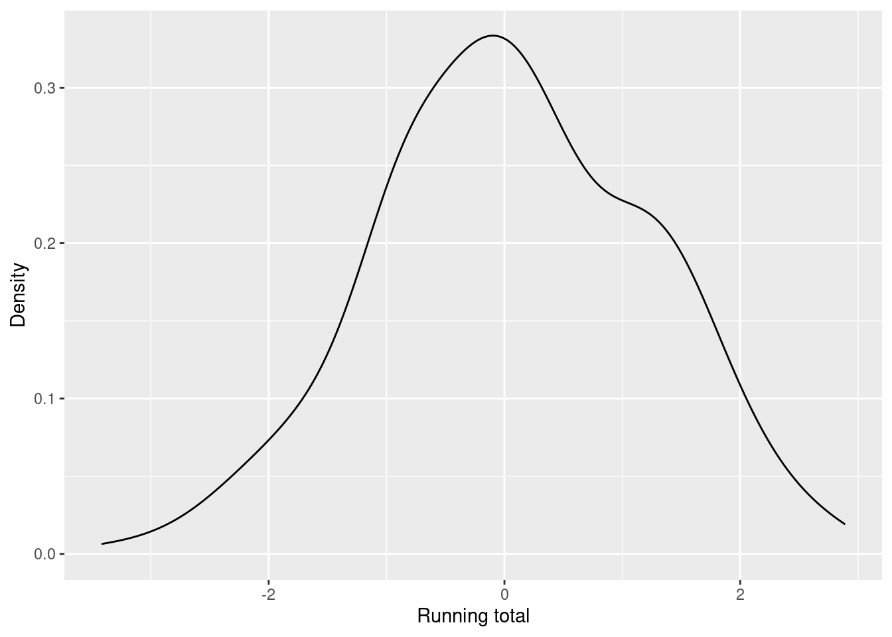
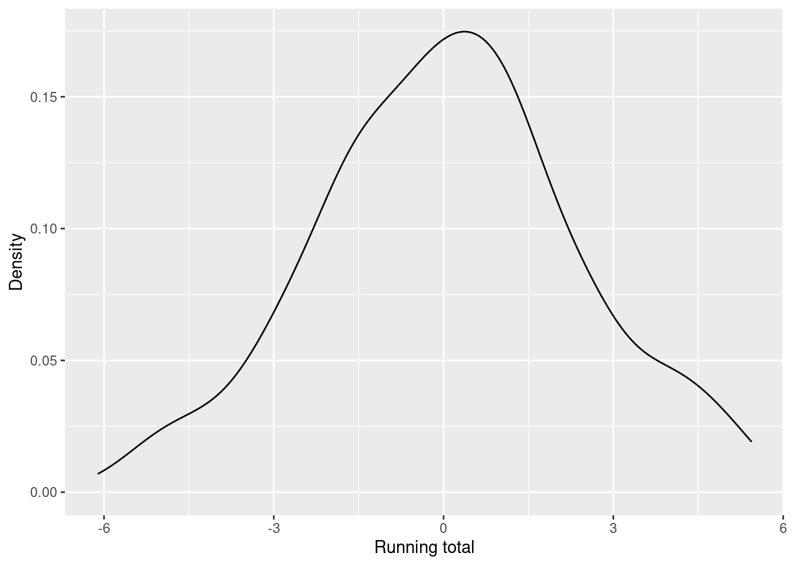

Section 1.2 presented a very brief overview of a few key concepts in statistics (probability mass function, expected value, variance). In our current course, however, we need the notion of a random variable that can take any value among a continuum of values, e.g. the set of real numbers.
Most of the concepts in the discrete case in Section 1.2 extend to continuous random variables with only a few differences that are relevant to us.
First, unlike discrete distributions, continuous distributions do not assign probabilities to single values. If X follows a continuous distribution over the set of real numbers, the P(X = 1) = 0. Continuous distributions assign probabilities to intervals or unions of intervals. In the cases that we will encounter in the present course, a continuous distribution will be characterized by its density function (the continuous analogue to the probability mass function).
Unlike the probability mass functions, a density does not map values to probabilities. The probability of an interval, however, is the area under the density function over that interval.
In order to get familiar with continuous distributions we will look at two examples.
3.1 Uniform distributions
The uniform density is constant over the interval [a, b] (the parameters of the distribution). Figure 3.1 shows the density of the uniform distribution over [-1, 1].
unif_dens_plt <-ggplot() +# Sets the range of the x-axis from -2 to 2xlim(c(-2, 2)) +stat_function(fun = dunif, args =list(min =-1,max =1 ),n =1000 ) +labs(x ="x",y ="Density" )unif_dens_plt

Figure 3.1: Density function of the uniform distribution over [-1, 1].
3.1.1 Probabilities
The area under the density function for an interval is the probability of occurrence of outcomes in this interval. It is easy to calculate the area under Figure 3.1 for the interval [-1, -0.2. The height of the density function is constant at 1/2. The length of the interval is 0.8, therefore the area of the rectangle is 0.8 \cdot 1/2 = 0.4Figure 3.2.
Scale for x is already present.
Adding another scale for x, which will replace the existing scale.

Figure 3.2: Probability of occurence in the interval [-1, -0.2].
P(X < -0.2) = 0.4
You can also compute this probability using the punif function. By default it computes probabilities of the type P(X < x), where x is its first argument. Note that you also need to specify the limits of the distribution ([-1, 1] in this case).
punif(-0.2, min =-1, max =1)
[1] 0.4
Let us compute the probabilities of another event: X > 5. Again, the probability of an interval is given by the area under the density over that interval. The length of the interval is 0.5, the height of the density is the same as before (1/2). Therefore the area of the rectangle is 0.5 \cdot 0.5 = 0.25Figure 3.3.
Scale for x is already present.
Adding another scale for x, which will replace the existing scale.

Figure 3.3: Probability of occurence in the interval [0.5, 1].
To compute this probability using R you have two options. By default punif computes probabilities for intervals of the type (-\infty, x]. Running the following code will give you the probability of P(X < 0.5).
punif(0.5, min =-1, max =1)
[1] 0.75
You can use the fact that the total area under the density is one.
P(X > 0.5) = 1 - P(X < 0.5)
1-punif(0.5, min =-1, max =1)
[1] 0.25
Or you can instruct punif to compute probabilities of the type P(X > x) using its lower.tail argument.
punif(0.5, min =-1, max =1, lower.tail =FALSE)
[1] 0.25
Finally, lets compute the following probability:
P(-0.2 < X < 0.4)
The area of the rectangle is (0.4 - (-0.2)) \cdot 0.5 = 0.3Figure 3.4.
unif_dens_plt +geom_ribbon(data =tibble(x =c(-0.2, 0.4),ymin =0,y =0,ymax =0.5 ),aes(x = x, y = y, ymin = ymin, ymax = ymax),fill ="steelblue",alpha =0.2 ) +annotate("text", x =0.2, y =0.3, label ="P(-0.2 < X < 0.4) = 0.3") +scale_x_continuous(breaks =c(-1, -0.2, 0.4, 1), limits =c(-2, 2))
Scale for x is already present.
Adding another scale for x, which will replace the existing scale.

Figure 3.4: Probability of occurence in the interval [-0.2, 0.4].
To use punif we will avail ourselfs of the fact that
P(x_1 < X < x_2) = P(X < x_2) - P(X < x_1)
punif(0.4, min =-1, max =1) -punif(-0.2, min =-1, max =1)
[1] 0.3
3.1.2 Sampling
In order to illustrate the concept of probability it is useful to select values at random from a distribution and to observe their behavior. To select values ot random from the uniform distribution with limits a = -1 and b = 1 we can use the runif function. The number of values selected is controlled by the n argument, while the parameters of the distribution are specified in min (a) and max (b).
## Select n = 5 values at random from the uniform distribution over [-1, 1]runif(n =5, min =-1, max =1)
Now that you’ve seen what runif does, lets create a larger simulation which we will use in the examples. We will select n = 200 values at random from the same distribution and we will store these values as a column in a data table using the function tibble.
unif_sim <-tibble(x =runif(n =200, min =-1, max =1))
The following code plots the values in x as small lines just over the x-axis (a rug plot).
## Code for illustration onlyunif_dens_plt +geom_rug(aes(x = x), data = unif_sim)

The area under the density function for an interval is the probability of occurrence of outcomes in this interval. It is easy to calculate the area under Figure 3.1 for the interval [-1, -0.2]. The height of the density function is constant at 1/2. The length of the interval is 0.8, therefore the area of the rectangle is 0.8 \cdot 1/2 = 0.4.
P(X < -0.2) = 0.4
You can also compute this probability using the punif function. By default it computes probabilities of the type P(X < x), where x is its first argument. Note that you also need to specify the limits of the distribution ([-1, 1] in this case).
## Compute the probabilitypunif(-0.2, min =-1, max =1)
[1] 0.4
Earlier we used runif to select a couple of values at random from this distribution and stored the result in an object called x. Let us compare the observed proportion of values less than -0.2 to the theoretical probability.
## Use < to see which values in x are less than -0.2head(unif_sim$x <-0.2)
[1] TRUE TRUE FALSE TRUE FALSE FALSE
## Compute the sample proportion in the simulated data## This relies on the following conversion of the logical values## TRUE -> 1, FALSE -> 0. This conversion happens under the hood ## in the mean functionmean(unif_sim$x <-0.2)
[1] 0.385
As an exercise, increase the number of games plated (change the size argument in runif) and compare the observed proportion to the probability.
By far the most important distribution in this course is the normal distribution. When we say a normal distribution we usually mean the family of normal distributions which described by two parameters \mu and \sigma^2.
The first parameter of the normal distribution (\mu) controls the location (center) of the distribution. The second parameter (\sigma) controls the spread (variance) of the distribution.
dt <-expand_grid(## Creates a sequence of 100 numbers between -3 and 3x =seq(-5, 5, length.out =500),mu =c(-2, 2),sigma =c(0.5, 1)) %>%mutate(## Computes the standard normal density at each of the 100 points in xnorm_dens =dnorm(x, mean = mu, sd = sigma),mu =factor(mu),sigma =factor(paste("sigma =", sigma)) )ggplot() +## Draws the normal density linegeom_line(data = dt, aes(x = x, y = norm_dens, colour = mu)) +facet_wrap(~ sigma) +geom_vline(xintercept =c(-2, 2), lty =2, alpha =0.3) +scale_x_continuous(breaks =c(-5, -2, 2, 5), limits =c(-5, 5)) +labs(y ="Density" )

Figure 3.5: Densities of normal distributions for different values of \mu and \sigma.
The normal distribution emerges as the limiting distribution of sums independent random variables (with finite variance). To illustrate this, consider a collection of players who play one and the same game repeatedly. Each game is independent from the other and a player can win any amount between 0 and 1 EUR or lose anything between 0 and 1 EUR with equal probability. The outcome (win or loss) of each game is thus uniformly distributed over [-1, 1]. The running total of each player is simply the cumulative sum of the outcomes of their games. Let X_{ik} denote the outcome of game k for player i. The running total is defined as:
\text{Total}_{ik} = \sum_{t = 1}^{k} X_{it} = X_{i1} + \ldots + X_{ik}
Figure 3.6 shows the trajectories of 300 players playing a total of 16 games. While it is hard to predict where each individual player will end up, it turns out that we can be quite confident about how the collection of players will look like (in terms of total winnings).

Figure 3.6: A simulation of 300 players playing 16 games with outcomes uniformly distributed on [-1, 1].
Figures 3.7 and 3.8 show the distribution of winnings after the fourth and after the sixteenth game. These distributions appear to be roughly symmetric around zero with high probability close to the center and low probability for extreme winnings. It can be shown that for a large number of games this distribution is close to a normal distribution with \mu = 0 and variance proportional to the number of games.

Figure 3.7: Distribution of the running total of the players after the fourth game.

Figure 3.8: Distribution of the running total of the players after the sixteenth game.